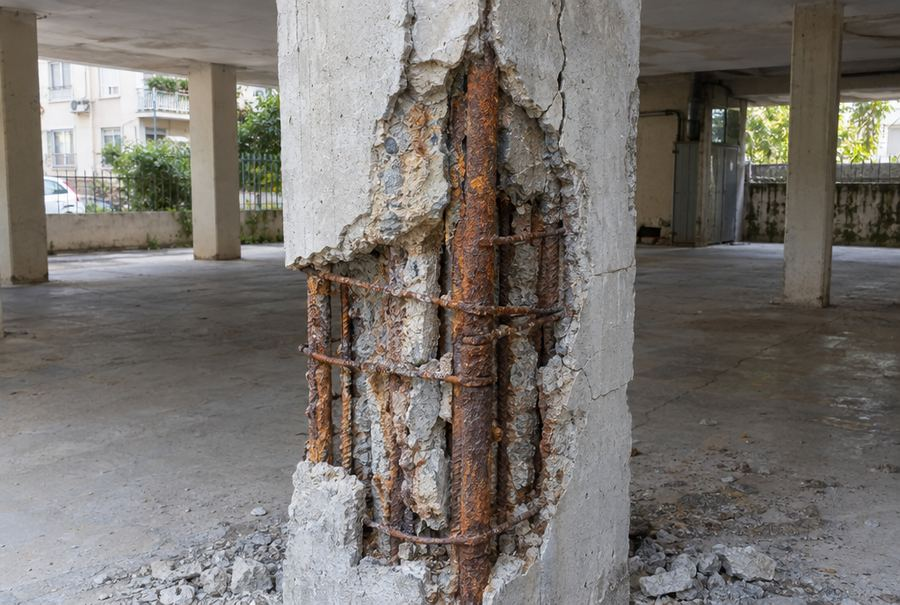
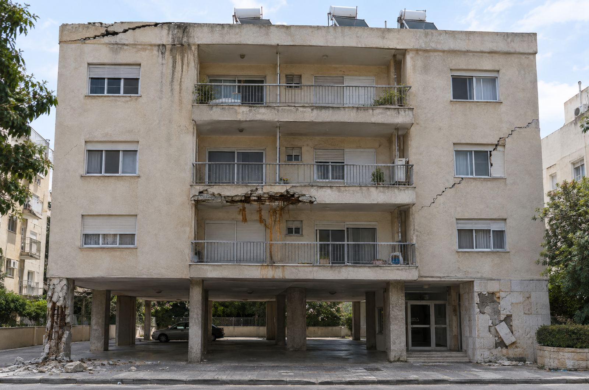
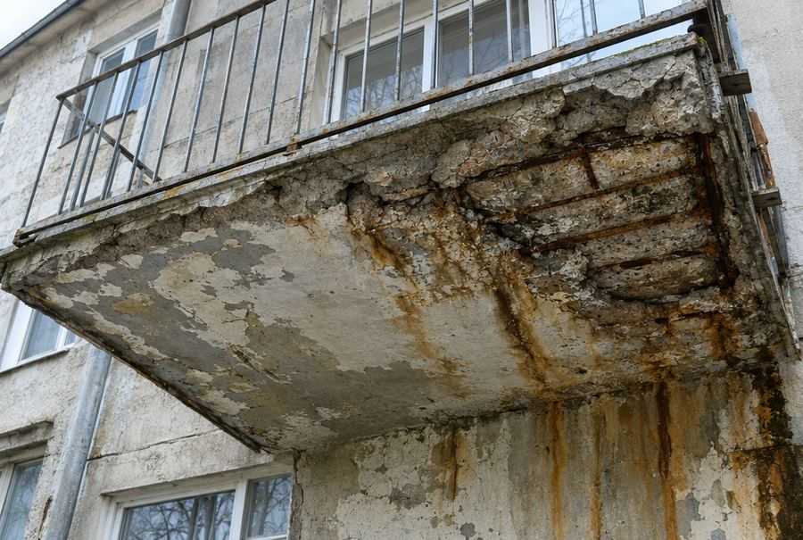
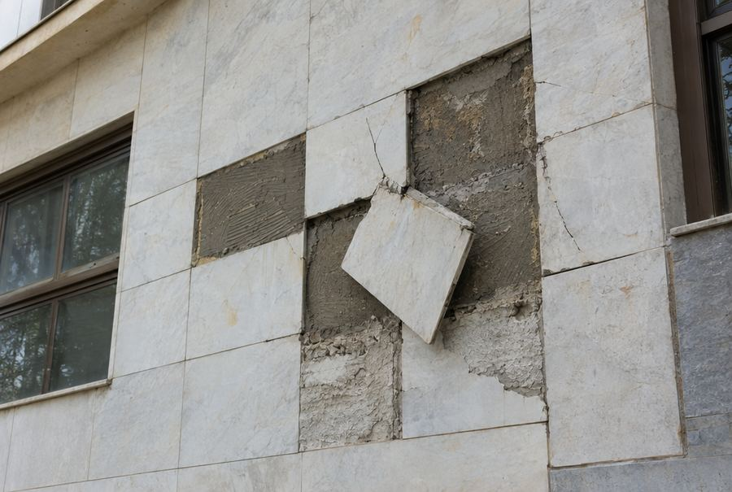
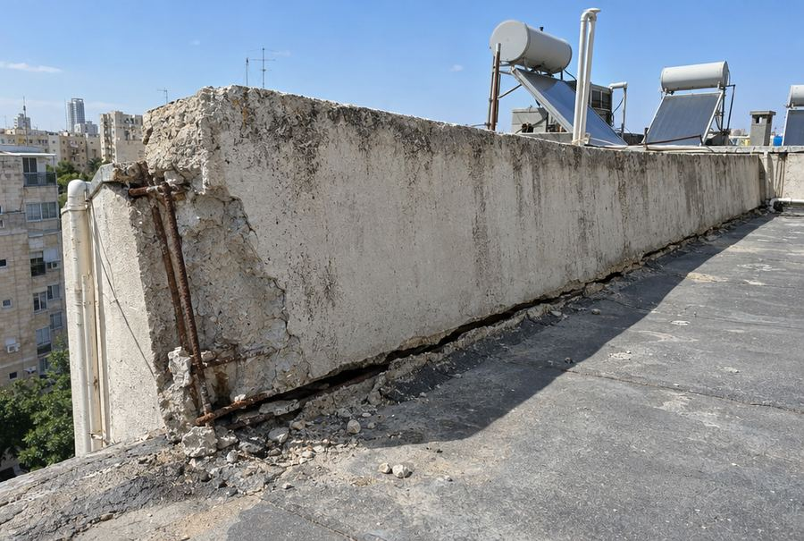
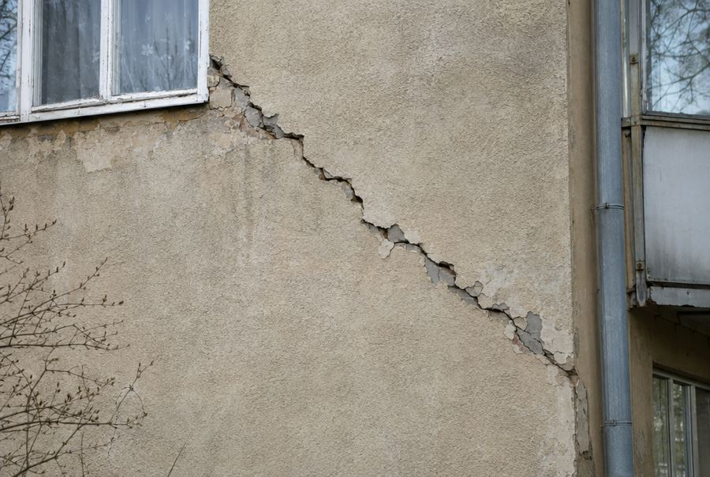
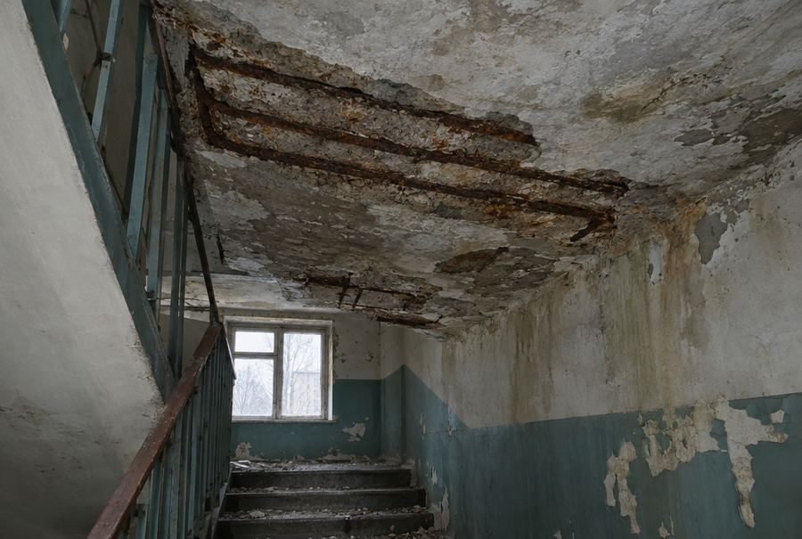

סכנה גבוהה
עמודים סדוקים וברזל חשוף
העמודים נושאים את כל הבניין. בטון שנשר וברזל חלוד מקטינים את חוזק העמוד ודורשים שיקום או עיבוי עמודים.
יש לכם עמוד כזה? שלחו תמונה
16 שנה אנחנו משקמים עמודים, מרפסות וחזיתות בגוש דן, ומלווים את הדיירים מול העירייה עד שהצו מוסר.
לחצו על נקודה בתמונה או על שורה ברשימה, והתמונה תתקרב אל הבעיה. בבניין אחד ישן יכולים להופיע כמה ליקויים יחד, וכל אחד מהם מספיק כדי שהעירייה תוציא צו מבנה מסוכן.

סדק עמוק לאורך המעקה. גוש בטון מגובה הגג יכול ליפול על המדרכה.
מים שחודרים מהגג מחלידים את הברזל בתוך הקיר ומאיצים את ההתפוררות.
הבטון בתחתית המרפסת נשר, הברזל חשוף וחלודה זולגת למטה. סכנה ישירה לדיירים מתחת.
סדק מדורג שעובר בין החלונות. יכול להעיד על תזוזה בשלד וצריך בדיקת מהנדס.
הליקוי המסוכן ביותר: העמוד נושא את הקומות שמעליו, והברזל שלו חלוד וחשוף.
אריחים נפלו ואחד תלוי ליד הכניסה, בדיוק במקום שבו הדיירים עוברים.
מזהים אחד מהסימנים האלה בבניין שלכם? שלחו תמונה וקבלו הערכה ראשונית בחינם.
שלחו תמונה בוואטסאפאלה הליקויים שבגללם עיריות מוציאות צו מבנה מסוכן. רובם מתחילים קטן, אבל כשברזל הזיון מחליד הוא מתנפח, שובר את הבטון מבפנים ומחליש את השלד.

העמודים נושאים את כל הבניין. בטון שנשר וברזל חלוד מקטינים את חוזק העמוד ודורשים שיקום או עיבוי עמודים.
יש לכם עמוד כזה? שלחו תמונה
מים חודרים לרצפת המרפסת ומחלידים את הברזל. גושי בטון נופלים לחצר ולמדרכה, וזו הסיבה הנפוצה לצו מסוכן.
בדיקת מרפסת
אריח שנופל מקומה שלישית יכול להרוג. חיזוק אריחים בעיגון מכני מונע נפילה בלי לפרק את כל החזית.
חיזוק חיפוי
מעקה גג ישן נחלש מבפנים. סדק אופקי בבסיס המעקה מראה שהוא עלול לקרוס כלפי חוץ.
בדיקת מעקה גג
סדק בזווית של כ־45 מעלות עלול להעיד על שקיעה ביסודות. הוא שונה מסדקי טיח רגילים וצריך אבחון הנדסי.
איך יודעים אם הסדק מסוכן?
רטיבות בתקרה גורמת לבטון להתקלף ולחשוף את הברזל. כאן חלקים נופלים ישירות על הדיירים.
שיקום תקרהכל העבודות מתבצעות בליווי מהנדס קונסטרוקטור ובהתאם לדרישות מחלקת המבנים המסוכנים בעירייה.
טיפול מלא: קריאת הצו, מפרט מהנדס, ביצוע, והגשת חוות הדעת לעירייה עד להסרת הצו.
חציבת בטון רופף, ניקוי ברזל מחלודה, הוספת ברזל במקום שנחלש, ויציקה מחדש או עיבוי העמוד.
שיקום תחתית המרפסת, חיזוק מעקות ואיטום הרצפה כדי שהבעיה לא תחזור.
טיפול בקורוזיה בחומרי שיקום ייעודיים, כולל בניינים קרובים לים שבהם החלודה מהירה יותר.
חיזוק עמודים, קורות ותקרות ביריעות פחמן. חזק, דק, ובלי להקטין את החלל.
עיגון מכני של אריחים רופפים בחזית, מבלי לפרק את כל החיפוי.
טיפול נקודתי בגובה בלי פיגום מלא, מתאים לליקויים מקומיים ולתקציב מצומצם.
איטום אחרי השיקום, כדי שמים לא יחדרו שוב ויחלידו את הברזל.
אנחנו מלווים את הדיירים בכל שלב, כדי שלא תצטרכו להתעסק עם הבירוקרטיה בעצמכם.
תמונות של הליקויים ומכתב העירייה בוואטסאפ. מקבלים הערכה ראשונית בחינם.
מגיעים לבניין, ממפים את כל הליקויים ונותנים הצעת מחיר מפורטת. הבדיקה בחינם וללא התחייבות.
מפרט שיקום, ביטוח והגשת המסמכים למחלקת המבנים המסוכנים.
פיגום, סנפלינג או במת הרמה. עדכון לוועד הבית בכל שלב, עם תמונות.
המהנדס חותם על חוות דעת, אנחנו מגישים לעירייה ומלווים עד שהצו מוסר.
אנחנו לא חברת שיפוצים כללית. שיקום בטון וחיזוק מבנים זה מה שאנחנו עושים כל יום.
מהנדס קונסטרוקטור מכין את המפרט, מפקח על העבודה וחותם על חוות הדעת לעירייה.
הצעת מחיר מפורטת לפי סעיפים, כדי שהוועד יוכל להציג אותה לכל הדיירים בלי הפתעות.
כל עבודה מסתיימת עם תיעוד מלא, תמונות לפני ואחרי, ותעודת אחריות.
הצו מגיע לכל בעלי הדירות, אבל בפועל הוועד מנהל את התהליך. זה מה שכדאי לעשות בשבוע הראשון:
אנחנו עובדים מול מחלקות המבנים המסוכנים בכל ערי גוש דן והמרכז.
מידע מעשי לפני שמחליטים: מה עושים עם צו, איך מזהים סדק מסוכן, ומה עושים בבניין שמחכה להתחדשות.
ברוב הבניינים העבודה עצמה נמשכת בין כמה ימים לכמה שבועות, לפי היקף הליקויים. אחרי סיום העבודה המהנדס מגיש חוות דעת לעירייה, והעירייה מסירה את הצו לאחר בדיקה.
כן. בכל שיקום של שלד הבניין נדרש מהנדס שיכין מפרט, יפקח על העבודה ויחתום על חוות הדעת שנשלחת לעירייה. אצלנו המהנדס כלול בתהליך.
המחיר תלוי במספר הליקויים, בגובה הבניין ובדרך הגישה (פיגום, סנפלינג או במת הרמה). אחרי שתשלחו תמונות ניתן לכם הערכה ראשונית וטווח מחיר בחינם, והצעה מדויקת אחרי בדיקה בבניין, שגם היא בחינם וללא התחייבות.
העירייה יכולה להטיל קנסות, לבצע את העבודה בעצמה ולחייב את הדיירים, ובמקרים מסוימים לפנות לבית משפט. בנוסף, האחריות לנזק לעובר אורח עלולה לחול על בעלי הדירות.
כן, ברוב המקרים. אנחנו מגדרים את אזורי העבודה, מתאמים מראש עבודות רועשות ושומרים על דרך כניסה בטוחה לדיירים.
ככל שמטפלים מוקדם יותר, השיקום קטן וזול יותר. שלחו לנו 3 תמונות של הליקויים ואת מכתב העירייה, ונחזור אליכם תוך שעה עם הערכה ראשונית. ההערכה והבדיקה בבניין בחינם וללא התחייבות.